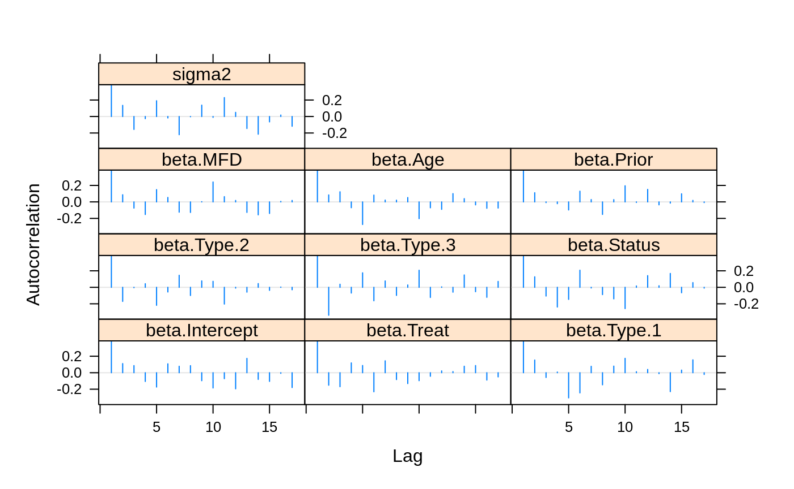

Introduction to BASSLINE
Nathan Constantine-Cooke
nathan.constantine-cooke@ed.ac.ukCatalina Vallejos
catalina.vallejos@igmm.ed.ac.uk2022-05-09
Source:vignettes/BASSLINE.Rmd
BASSLINE.RmdIntroduction
BASSLINE (BAyeSian Survival anaLysIs usiNg shapE mixtures of log-normal distributions) uses shape mixtures of log-normal distributions to fit data with fat tails and has been adapted from code produced for Objective Bayesian Survival Analysis Using Shape Mixtures of Log-Normal Distributions (Vallejos and Steel 2015). Some of the functions have been rewritten in C++ for increased performance.
5 distributions from the log-normal family are supported by BASSLINE:
- The log-normal distribution
- The log student’s T distribution
- The log-logistic distribution
- The log-Laplace distribution
- The log-exponential power distribution
As well as MCMC (Markov chain Monte Carlo) algorithms for the 5 distributions, additional functions which allow log-marginal likelihood estimators and deviance information criteria to be calculated are provided. Case deletion analysis and outlier detection are also supported.
This vignette demonstrates how to use the BASSLINE package to carry out survival analysis using the included cancer data-set from the veterans administration lung cancer trial.
Quick Start
Essential parameters for running the MCMC are :
-
N: total number of iterations -
thin: length of the thinning period (i.e. only everythiniterations will be stored in the output) -
burn: length of burn-in period (i.e. the initialburniterations that will be discarded from the output) -
Time: Vector of survival times -
Cens: Vector indicating if observations are censored -
X: Matrix of covariates for each observation
Starting values for the \(\beta\)s and \(\sigma^2\) are randomly sampled from an appropriate distribution if not given by the user as arguments. Additional arguments allow the type of prior to be specified, and the observations to be specified as set or point observations. See the documentation for any of the MCMC functions included with BASSLINE for more information on these additional arguments.
?MCMC_LN()Note that BASSLINE does not support factors/ levels. Factors should be converted to separate binary variables for each level which can be easily done via the provided BASSLINE_convert function. For example:
| Time | Cens | treatment |
|---|---|---|
| 10 | 1 | A |
| 15 | 1 | B |
| 24 | 0 | C |
| 21 | 1 | A |
can be converted by simply passing the dataframe object to the function.
converted <- BASSLINE_convert(df)| Time | Cens | treatment.A | treatment.B | treatment.C |
|---|---|---|---|---|
| 10 | 1 | 1 | 0 | 0 |
| 15 | 1 | 0 | 1 | 0 |
| 24 | 0 | 0 | 0 | 1 |
| 21 | 1 | 1 | 0 | 0 |
The Cancer Data Set
Included with BASSLINE is an example data set, cancer. This data has been obtained from a study conducted by the US Veterans Administration where male patients with advanced inoperable lung cancer were given either standard or experimental chemotherapy treatment (Kalbfleisch and Prentice 2002). 137 patients took part in the trial, 9 of whom left the study before their death and are thus right censored. Various covariates were also documented for each patient.
Viewing the first 5 observations shows the data set’s format:
| Time | Cens | Intercept | Treat | Type.1 | Type.2 | Type.3 | Status | MFD | Age | Prior |
|---|---|---|---|---|---|---|---|---|---|---|
| 72 | 1 | 1 | 0 | 1 | 0 | 0 | 60 | 7 | 69 | 0 |
| 411 | 1 | 1 | 0 | 1 | 0 | 0 | 70 | 5 | 64 | 1 |
| 228 | 1 | 1 | 0 | 1 | 0 | 0 | 60 | 3 | 38 | 0 |
| 126 | 1 | 1 | 0 | 1 | 0 | 0 | 60 | 9 | 63 | 1 |
| 118 | 1 | 1 | 0 | 1 | 0 | 0 | 70 | 11 | 65 | 1 |
The first column of cancer denotes the survival time for the observation. The second column denotes the censored status for the observation (0 for right censored; 1 for not censored ). All remaining columns are covariates. Additional information can be found in the documentation for cancer.
?cancer
Time <- cancer[,"Time"]
Cens <- cancer[,"Cens"]MCMC chains
MCMC chains can be easily generated by providing the aforementioned essential parameters. As previous discussed, starting values are randomly sampled if not provided by the user. The user will possibly obtain improved results from experimenting with these starting values.
Please note N = 1000, as used in these examples, is not enough to reach convergence and is only used as a demonstration. The user is advised to run longer chains with a longer burn-in period for more accurate estimations (especially for the log-exponential power model).
# Log-normal
LN <- MCMC_LN(N = 1000, thin = 20, burn = 40, Time = Time,
Cens = Cens, X = cancer[,3:11])
#> Sampling initial betas from a Normal(0, 1) distribution
#> Initial beta 1 : -0.18
#> Initial beta 2 : 2.49
#> Initial beta 3 : -0.43
#> Initial beta 4 : 1.55
#> Initial beta 5 : -0.42
#> Initial beta 6 : 0.03
#> Initial beta 7 : -0.92
#> Initial beta 8 : -1.37
#> Initial beta 9 : 1.16
#>
#> Sampling initial sigma^2 from a Gamma(2, 2) distribution
#> Initial sigma^2 : 0.56
# Log-student's T
LST <- MCMC_LST(N = 1000, thin = 20, burn = 40 , Time = Time, Cens = Cens,
X = cancer[,3:11])
#> Sampling initial betas from a Normal(0, 1) distribution
#> Initial beta 1 : -0.27
#> Initial beta 2 : -1.49
#> Initial beta 3 : 0.68
#> Initial beta 4 : 0.01
#> Initial beta 5 : 1.36
#> Initial beta 6 : 1.46
#> Initial beta 7 : 0.18
#> Initial beta 8 : -2
#> Initial beta 9 : 0.9
#>
#> Sampling initial sigma^2 from a Gamma(2, 2) distribution
#> Initial sigma^2 : 0.12
#>
#> Sampling initial nu from a Gamma(2, 2) distribution
#> Initial nu : 0.31
#>
#> AR nu : 0.36
# Log-Laplace
LLAP <- MCMC_LLAP(N = 1000, thin = 20, burn = 40, Time = Time, Cens = Cens,
X = cancer[,3:11])
#> Sampling initial betas from a Normal(0, 1) distribution
#> Initial beta 1 : -0.33
#> Initial beta 2 : -0.08
#> Initial beta 3 : -0.39
#> Initial beta 4 : 0.98
#> Initial beta 5 : 1.17
#> Initial beta 6 : 0.05
#> Initial beta 7 : 1.18
#> Initial beta 8 : 0.44
#> Initial beta 9 : -1.22
#>
#> Sampling initial sigma^2 from a Gamma(2, 2) distribution
#> Initial sigma^2 : 0.16
#Log-exponential power
LEP <- MCMC_LEP(N = 1000, thin = 20, burn = 40, Time = Time, Cens = Cens,
X = cancer[,3:11])
#> Sampling initial betas from a Normal(0, 1) distribution
#> Initial beta 1 : -1.9
#> Initial beta 2 : -1.43
#> Initial beta 3 : -0.02
#> Initial beta 4 : -0.46
#> Initial beta 5 : 0.86
#> Initial beta 6 : -0.81
#> Initial beta 7 : 2.4
#> Initial beta 8 : -1.76
#> Initial beta 9 : -0.94
#>
#> Sampling initial sigma^2 from a Gamma(2, 2) distribution
#> Initial sigma^2 : 2.5
#>
#> Sampling initial alpha from a Uniform(1, 2) distribution
#> Initial alpha : 1.78
#>
#> AR beta 1 : 0.52
#> AR beta 2 : 0.63
#> AR beta 3 : 0.73
#> AR beta 4 : 0.69
#> AR beta 5 : 0.76
#> AR beta 6 : 0.02
#> AR beta 7 : 0.07
#> AR beta 8 : 0.03
#> AR beta 9 : 0.69
#> AR sigma2 : 0.92
#> AR alpha : 0.12
#Log-logistic
LLOG <- MCMC_LLOG(N = 1000, thin = 20, burn = 40, Time = Time, Cens = Cens,
X = cancer[,3:11])
#> Sampling initial betas from a Normal(0, 1) distribution
#> Initial beta 1 : 0.62
#> Initial beta 2 : -0.5
#> Initial beta 3 : -0.18
#> Initial beta 4 : 0.13
#> Initial beta 5 : -0.79
#> Initial beta 6 : 0.86
#> Initial beta 7 : -0.54
#> Initial beta 8 : 1.5
#> Initial beta 9 : 2.18
#>
#> Sampling initial sigma^2 from a Gamma(2, 2) distribution
#> Initial sigma^2 : 0.65Diagnostics
After generating MCMC chains, their suitability should be assessed. This can be done, in part, via the Trace_Plot function included with BASSLINE which will plot a chain for a variable across (non-discarded) iterations. We will investigate the chain for \(\beta_1\) from the log-normal model.
Trace_plot(1, LN)
For additional analysis of chains, the coda package is recommended which offers many different functions:


ACF plots are also available via coda:

Deviance Information Criterion
The deviance information criterion (DIC), a hierarchical modeling generalization of the Akaike information criterion (Spiegelhalter et al. 2002), can be easily calculated for the 5 models.
If the deviance is defined as
\[D\left(\theta, y\right) = -2 \log\left(f\left(y|\theta\right)\right)\]
then
\[ DIC = D\left(\bar{\theta}\right) + 2p_D \]
Where \(p_D\) is the number of effective parameters.
Each member of the log-normal family has a function to calculate DIC. We will present an example using the log-normal distribution and compare two models with differing covariates (all of the available covariates vs. only the last 4 covariates).
LN <- MCMC_LN(N = 1000, thin = 20, burn = 40, Time = Time,
Cens = Cens, X = cancer[,3:11])
#> Sampling initial betas from a Normal(0, 1) distribution
#> Initial beta 1 : -0.62
#> Initial beta 2 : 0.87
#> Initial beta 3 : -1.14
#> Initial beta 4 : 0.58
#> Initial beta 5 : -1.17
#> Initial beta 6 : -0.76
#> Initial beta 7 : -0.21
#> Initial beta 8 : 0.12
#> Initial beta 9 : 1.22
#>
#> Sampling initial sigma^2 from a Gamma(2, 2) distribution
#> Initial sigma^2 : 5.14
DIC_LN(Time = Time, Cens = Cens, X = cancer[,3:11], chain = LN)
#> Effective number of parameters : 10.14
#> Actual number of parameters : 10
#> [1] 1450.872
# Reduced model
LN.2 <- MCMC_LN(N = 1000, thin = 20, burn = 40, Time = Time,
Cens = Cens, X = cancer[,8:11])
#> Sampling initial betas from a Normal(0, 1) distribution
#> Initial beta 1 : -1.16
#> Initial beta 2 : 0.91
#> Initial beta 3 : 1.01
#> Initial beta 4 : 0.29
#>
#> Sampling initial sigma^2 from a Gamma(2, 2) distribution
#> Initial sigma^2 : 1.14
DIC_LN(Time = Time, Cens = Cens, X = cancer[,8:11], chain = LN.2)
#> Effective number of parameters : 4.89
#> Actual number of parameters : 5
#> [1] 1455.262Log-Marginal Likelihood
The log-marginal likelihood is given by:
\[ \log\left(m\left(t\right)\right) = \log\left( \int_{-\infty}^{\infty} \int_{0}^{\infty} \int_\Theta f\left(t \mid \beta, \sigma^2, \theta \right) \pi\left(\beta, \sigma^2, \theta\right) d\beta \: d\sigma^2 \: d\theta \right)\]
And can be easily estimated using the supplied function for each distribution which is based on the work of Chib (Chib 1995) and Chib and Jeliaskov (Chib and Jeliazkov 2001). The function will return a list which includes the log-marginal likelihood estimation, the log-likelihood ordinate, the log-prior ordinate, and the log-posterior ordinates. Messages detailing the progress of the algorithm are provided to the user.
LML_LN(thin = 20, Time, Cens = Cens, X = cancer[,3:11], chain = LN)
#> Likelihood ordinate ready!
#> Prior ordinate ready!
#> Posterior ordinate sigma2 ready!
#> Posterior ordinate beta ready!
#> $LL.ord
#> [1] -715.292
#>
#> $LP.ord
#> [1] -0.2479007
#>
#> $LPO.sigma2
#> [1] 0.8444352
#>
#> $LPO.beta
#> [1] 15.63174
#>
#> $LML
#> [1] -732.016Leave-One-Out Cross-Validation Analysis
Leave-one-out cross-validation analysis is also available for all 5 of the supported distributions. The functions returns matrices with \(n\) rows.
Its first column contains the logarithm of the conditional predictive ordinate (CPO) (Geisser and Eddy 1979). Larger values of the CPO indicate better predictive accuracy.
The second and third columns contain the Kullback–Leibler (KL) divergence between \[ \pi\left(\beta, \sigma^2, \theta \mid t_{-i}\right)\] and \[ \pi\left(\beta, \sigma^2, \theta \mid t\right)\] and its calibration index \(p_i\) (Cho et al. 2008) respectively. The later is used in order to evaluate the existence of influential observations. If \(p_i\) is substantially larger than 0.5, observation \(i\) is declared influential. Suggested cut-off values are 0.8 and 0.9.
LN.CD <- CaseDeletion_LN(Time, Cens = Cens, X = cancer[,3:11], chain = LN)
knitr::kable(LN.CD[1:5,])| logCPO | KL | CALIBRATION |
|---|---|---|
| -5.458756 | 0.0098535 | 0.5698464 |
| -7.521398 | 0.0329260 | 0.6262245 |
| -6.957001 | 0.0352064 | 0.6303754 |
| -5.928877 | 0.0033992 | 0.5411561 |
| -5.874741 | 0.0052567 | 0.5511332 |
It is sensible to report the number of observations which are deemed influential for a given cutoff which can be easily found by the user.
sum(LN.CD[,3] > 0.8)
#> [1] 3Outlier Detection
Outlier detection is available for a specified observation (obs) for the log-student’s T, log-Laplace, log-logistic, log-exponential power models. This returns a unique number corresponding to the Bayes Factor associated with the test \(M_0 : \Lambda_\text{obs} = \lambda_\text{ref}\) versus \(M_0 : \Lambda_\text{obs} \neq \lambda_\text{ref}\) (with all other \(\Lambda_j, j \neq \text{obs}\) free). The value of \(\lambda_\text{ref}\) is required as input.
The recommended value of \(\lambda_\text{ref}\) is 1 with the exception of the log-logistic model where we recommend 0.4 instead. The calculations which support these recommendations can be found in the original paper (Vallejos and Steel 2015).
OD.LST <- rep(0, 5)
for(i in 1 : 5)
{
OD.LST[i] <- BF_lambda_obs_LST(N = 100, thin = 20 , burn = 1, ref = 1,
obs = i, Time = Time, Cens = Cens,
X = cancer[,3:11], chain = LST)
}
#> AR nu : 0.36
#> AR nu : 0.39
#> AR nu : 0.33
#> AR nu : 0.38
#> AR nu : 0.33References
Chib, Siddhartha. 1995. “Marginal Likelihood from the Gibbs Output.” Journal of the American Statistical Association 90 (432): 1313–21. https://doi.org/10.1080/01621459.1995.10476635.
Chib, Siddhartha, and Ivan Jeliazkov. 2001. “Marginal Likelihood from the Metropolis–Hastings Output.” Journal of the American Statistical Association 96 (453): 270–81. https://doi.org/10.1198/016214501750332848.
Cho, Hyunsoon, Joseph G. Ibrahim, Debajyoti Sinha, and Hongtu Zhu. 2008. “Bayesian Case Influence Diagnostics for Survival Models.” Biometrics 65 (1): 116–24. https://doi.org/10.1111/j.1541-0420.2008.01037.x.
Geisser, Seymour, and William F. Eddy. 1979. “A Predictive Approach to Model Selection.” Journal of the American Statistical Association 74 (365): 153–60. https://doi.org/10.1080/01621459.1979.10481632.
Kalbfleisch, John D., and Ross L. Prentice. 2002. The Statistical Analysis of Failure Time Data. John Wiley & Sons, Inc. https://doi.org/10.1002/9781118032985.
Spiegelhalter, David J., Nicola G. Best, Bradley P. Carlin, and Angelika Van Der Linde. 2002. “Bayesian Measures of Model Complexity and Fit.” Journal of the Royal Statistical Society: Series B (Statistical Methodology) 64 (4): 583–639. https://doi.org/10.1111/1467-9868.00353.
Vallejos, Catalina A., and Mark F. J. Steel. 2015. “Objective Bayesian Survival Analysis Using Shape Mixtures of Log-Normal Distributions.” Journal of the American Statistical Association 110 (510): 697–710. https://doi.org/10.1080/01621459.2014.923316.